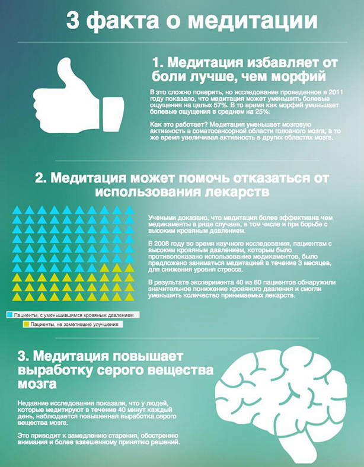

Медита́ция (лат. meditatio — «размышление») — ряд психических упражнений,
используемых в составе духовно-религиозной или оздоровительной практики,
или же особое психическое состояние, возникающее в результате этих
упражнений (или в силу иных причин). Медитация может рассматриваться
как вид
Созерцания (лат. contemplatio).
Медитация — это практика ума и сознания, которая имеет древние корни и широко практикуется
в различных культурах и религиозных традициях. Она представляет собой специальный вид внимательности
и внутреннего погружения, направленный на достижение уровня расслабленного, ясного и осознанного
состояния разума. Вот некоторые ключевые аспекты медитации. Медитация не требует специального
оборудования и может быть практикована в различных ситуациях и местах.
Она доступна практически каждому и не требует особых физических навыков.
Для многих людей медитация стала важной частью их повседневной жизни, помогая им справляться
с вызовами и находить гармонию внутри себя...
Практики медитации
Практики, связанные с медитацией, представляют собой разнообразные методы и техники,
которые используются для достижения внутреннего покоя, развития ума и духовного роста.
Вот некоторые из наиболее популярных практик, связанных с медитацией.
Выбор конкретной практики зависит от ваших целей и предпочтений.
Важно помнить, что регулярная и систематическая практика имеет большее значение,
чем конкретный вид медитации, и может принести множество
пользы вашему физическому и психическому благополучию...
Виды медитации
Буддийские медитации
Буддийская медитация, также известная как буддийская практика созерцания,
играет центральную роль в буддизме и представляет собой важный инструмент
для достижения духовного развития и просветления. Вам откроется восьмеричный путь...
Медитация ЛД
Медитация любящей доброты, также известная как метта-медитация,
является древней практикой, которая направлена на культивирование
чувства любви. Практикуя доброе отношение и безусловное принятие себя регулярно, вы можете...
Медитация осознанности
Это форма медитации, которая акцентируется на полном и беспристрастном внимании
к текущему моменту, без суждений и оценок. Основная идея этой медитации заключается в том,
чтобы просто "быть здесь и сейчас"...
Медитация Випассана
Это одна из ключевых практик буддийской медитации, которая сосредотачивается на развитии
осознанности и глубокого понимания реальности. Термин "випассана" переводится как "осознанное
видение" или "осознанное понимание"...
Йогические Медитации
Йогическая медитация представляет собой глубокую и многогранную систему медитативных практик,
которые являются ключевой частью традиционной йоги.
Включает в себя как физические упражнения и дыхательные техники...
С чего все началось?
Медитация, подобно йоге, имеет глубокие исторические корни и развивалась в течение тысячелетий.
Её история не имеет одного конкретного автора или точки начала,
так как различные формы медитации развивались в различных культурах и религиозных традициях по всему миру.
Общим элементом медитации в разных традициях является стремление к внутреннему спокойствию, самопониманию,
духовному развитию и обогащению жизни. Медитация продолжает развиваться и адаптироваться
к современному образу жизни и нуждам людей, оставаясь мощным инструментом для улучшения
качества жизни и достижения гармонии...
Музыка для медитации
Музыка для медитации играет важную роль в создании атмосферы, способствующей расслаблению,
концентрации и внутреннему умиротворению. Эта музыка специально создается или выбирается
для того, чтобы помочь практикующим достичь более глубокого
состояния медитации и улучшить их общее благополучие. Важно помнить,
что музыка для медитации не всегда необходима.
Некоторые практикующие предпочитают медитировать в полной тишине или сосредотачиваться на дыхании.
Музыка является всего лишь одним из инструментов,
который можно использовать для улучшения медитативного опыта,
и выбор зависит от ваших предпочтений и целей...
Что дает медитация?
Медитация может приносить множество пользы
для физического и психического здоровья человека.
Вот некоторые из основных выгод,
которые может предоставить практика медитации:

Снижение стресса: Медитация помогает уменьшить уровень стресса и тревожности,
улучшая общее психоэмоциональное состояние. Она способствует релаксации и
снижению уровня кортизола, гормона стресса, в организме.
Улучшение концентрации и внимания: Регулярная медитативная практика
может улучшить способность к концентрации и увеличить уровень внимания.
Это может помочь в работе, учебе и повседневных задачах.
Укрепление эмоционального благополучия: Медитация способствует развитию
положительных эмоций, таких как радость, благодарность и сострадание,
и может помочь в справлении с негативными эмоциями, такими как гнев и тревожность.
Улучшение сна: Медитация может помочь снять бессонницу и улучшить качество сна.
Расслабление и улучшение управления стрессом могут
способствовать более глубокому и спокойному сну.
Снижение боли: Некоторые виды медитации, такие как медитация на внимании к теле (body scan)
или медитация на осознанность боли (mindfulness-based pain management), могут
помочь управлять хронической болью и снижать ее восприятие.
Повышение самосознания: Медитация способствует развитию самосознания и самопонимания.
Она помогает понимать свои мысли, эмоции и реакции на окружающий мир,
что может способствовать лучшему саморазвитию.
Укрепление иммунной системы: Некоторые исследования свидетельствуют о том,
что медитация может укрепить иммунную систему,
делая организм более устойчивым к инфекциям и болезням.
Улучшение отношений: Медитация может помочь улучшить отношения с другими людьми,
так как она способствует развитию эмпатии и способности слушать других.
Важно отметить, что эффекты медитации могут быть индивидуальными,
и не всегда они достигаются быстро. Регулярная практика и терпимость
играют важную роль в достижении пользы от медитации.